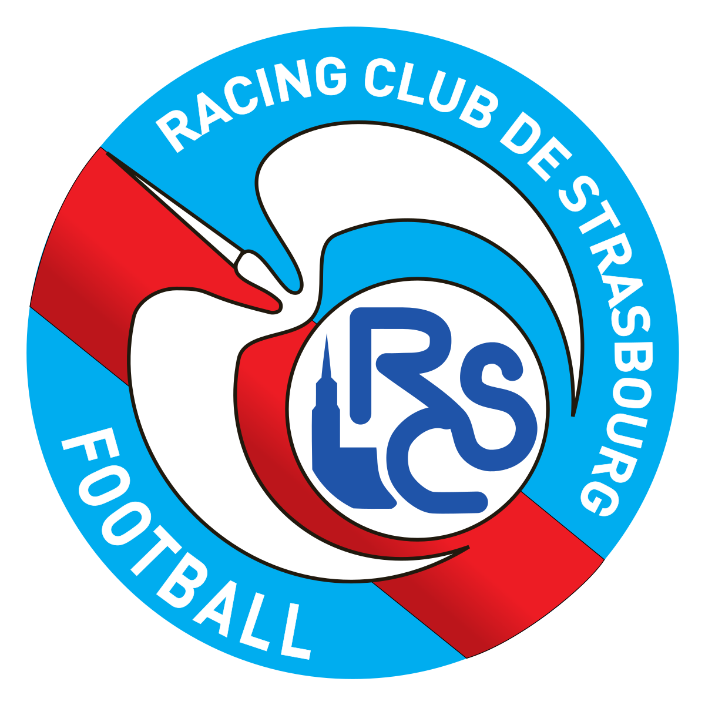
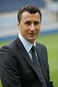
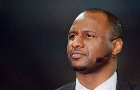

Le RC Strasbourg a été fondé en 1906 sous le nom de "FC Neudorf". En 1919, il prend le nom de Racing Club de Strasbourg Alsace. Le club obtient le statut professionnel en 1933 et s'impose alors comme un des meilleurs clubs français. En 2011, des problèmes financiers causent une rétrogradation administrative avec une perte du statut professionnel et une liquidation judiciare. Il retrouve le monde professionnel en 2016 et la ligue 1 en 2017. Par sa victoire de la coupe de la ligue en 2019, le club se qualifie pour le second tour préliminaire de la ligue europa après 13 ans d'abscence des compétitions continentales.


Président du club :
Marc Keller
Il est président depuis 2012.

Entraineur :
Patrick Vieira
Il est entraineur depuis le 11 juin 2018.
| Compétitions nationales |
|---|
| Championnat de France: champion en 1979,vice-champion 1935 |
| Championnat de france division2: Champion 1977, 1988, 2017, vice-champion 1972, 2002 |
| Coupe de france: vainqueur en 1951, 1966, 2001,Finaliste en 1937, 1947, 1995 |
| Coupe de la ligue: vainqueur en 1997, 2005, 2019 |
| Trophée des champions: finaliste en 2001 |
| Compétitions internationales |
|---|
| Coupe d'europe des clubs champions: quart de finaliste 1980 |
| Ligue Europa: huitieme de finaliste 1979, 1998, 2006 |
| Coupe intertoto: vainqueur 1995 |
| Coupe des villes de foires: quart de finaliste en 1965 |
| Coupe des coupes: huitieme de finaliste 1967 |